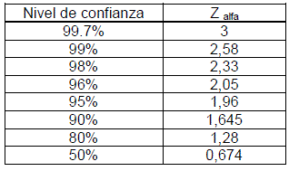

El tamaño de la muestra debe ser adecuado para garantizar la precisión y la confiabilidad de los estimadores estadísticos. Existen fórmulas matemáticas para calcular el tamaño óptimo de una muestra, en función del nivel de confianza, el margen de error y la variabilidad de la población.
“MathMinds”
Tamaño de la Muestra
Población o universo
Para conocer el tamaño de una muestra, es importante considerar el tamaño de la población. Después de todo, de la población vamos a obtener el subconjunto de nuestra muestra.
Nivel de confianza
El nivel de confianza, en estadística, es la probabilidad máxima con la que podríamos asegurar que el parámetro a estimar se encuentra dentro de nuestro intervalo estimado. El nivel de confianza se define como 1-alfa y sus valores más comunes son 90%, 95% y 99%. El nivel de confianza se refiere a la tasa de éxito a largo plazo del método, es decir, qué tan seguido va a capturar este tipo de intervalo el parámetro de interés. Un intervalo de confianza específico da un rango de valores posibles para el parámetro de interés.
Tabla de valores ya establecidos

Margen de Error
El margen de error se denota por e minúscula, en la muestra estadística es una medida que indica el grado de error o incertidumbre que se produce al estimar un parámetro de la población a partir de una muestra. El margen de error depende del tamaño de la muestra, de la variabilidad de la población y del nivel de confianza que se desea tener en la estimación. A mayor tamaño de la muestra, menor margen de error. A mayor variabilidad de la población, mayor margen de error. A mayor nivel de confianza, mayor margen de error.
Por ejemplo, si nos piden considerar un margen de error del 5%, solo debemos dividir dicho porcentaje entre 100:
5%= 5/100=0.05
Para un margen de error del 5%, consideremos el valor de e= 0.05
La siguiente liga te ayudara a calcular el tamaño de la muestra, presiona aquí.
Obra publicada con Licencia Creative Commons Reconocimiento 4.0